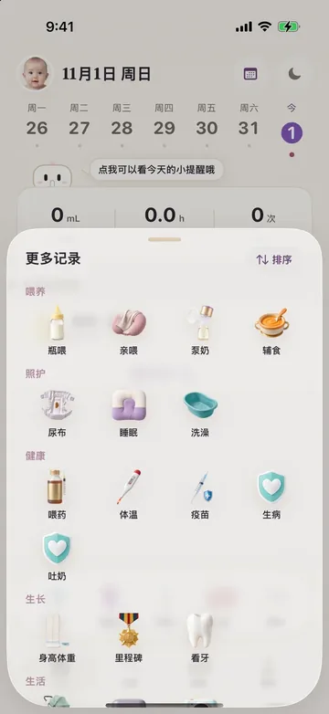
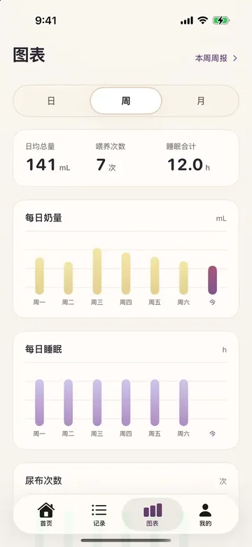
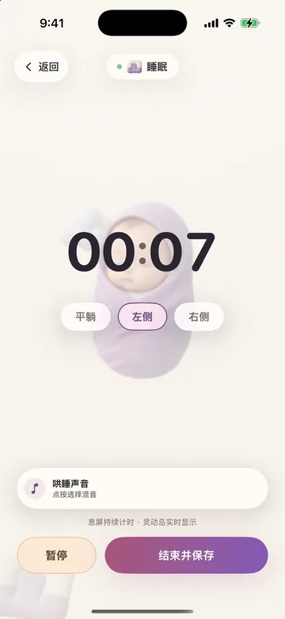

喂养与计时瓶喂、亲喂、泵奶、辅食，记住常用数量和上次记录。
速记体验
先照顾孩子，再照顾记录
常用动作按宝宝阶段放到首页；复杂信息交给时间线、今日摘要和图表。夜里喂奶时少思考，回看时更清楚。

睡眠与作息小睡、夜间睡眠、洗澡，一键进入对应表单。
尿布与健康尿布状态、吐奶、体温、用药、症状、看医生快速补记。
提醒与日历下次喂奶、小睡超时、疫苗待办；可写入系统日历。
家庭协作
一家人，记录同一份时间线
Family Annual 不是简单共享相册，而是完整协作：爸爸记录喂奶，妈妈补上尿布，祖辈也能在授权后帮忙写下今天发生的事。
- 最多 6 名成员共享同一家庭空间
- 时间线显示记录人，避免重复和误改
- 成员加入免费，Family 年付包含全体成员 Plus
- 离开家庭后，已产生的记录仍按数据规则保留
长期洞察
看得懂今天，也回得起这个月


提醒生态
到点提醒，不靠脑记
喂奶、小睡、热奶和疫苗待办可以进入通知、系统日历与 Live Activity。手机锁着也能知道下一步。
- 下次喂奶倒计时
- 睡眠与热奶计时
- 疫苗和体检待办
- 桌面与锁屏小组件
隐私边界
数据边界先说清楚
本机优先宝宝记录默认保存在你的设备上，没有 BabyOneDay 中央家庭数据库。
iCloud 家庭共享家庭数据走创建者 iCloud CloudKit，不经我们的服务器。
权限克制照片、提醒、日历等权限只用于你主动启用的功能。
第三方匿名分析可关闭；中国大陆构建默认不初始化第三方分析。App 不提供医疗诊断，出现急症信号请立即就医。
订阅方案
免费开始，需要时再升级
- 日常记录
- 今日摘要
- iCloud 备份
- 图表与全历史
- 周报与导出
- 全部声音
- 高级小组件
- 最多 6 人
- 同一时间线
- 成员含 Plus
价格以 App Store 实际展示为准。Plus Lifetime 一次性购买为 $49.99。
今晚就开始，把带娃这一天记清楚。
免费开始；需要家庭协作和长期洞察时再升级。